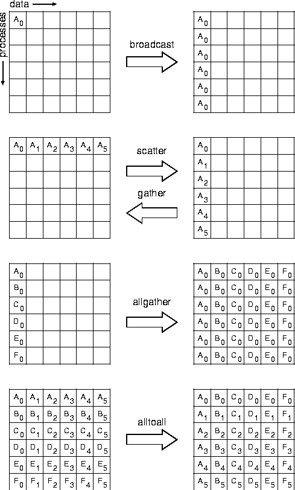

Collective communication is defined as communication that involves a group of processes. The functions of this type provided by MPI are the following:

A collective operation is executed by having all processes in the group call the communication routine, with matching arguments. The syntax and semantics of the collective operations are defined to be consistent with the syntax and semantics of the point-to-point operations. Thus, general datatypes are allowed and must match between sending and receiving processes as specified in Chapter Point-to-Point Communication . One of the key arguments is a communicator that defines the group of participating processes and provides a context for the operation. Several collective routines such as broadcast and gather have a single originating or receiving process. Such processes are called the root. Some arguments in the collective functions are specified as ``significant only at root,'' and are ignored for all participants except the root. The reader is referred to Chapter Point-to-Point Communication for information concerning communication buffers, general datatypes and type matching rules, and to Chapter Groups, Contexts, and Communicators for information on how to define groups and create communicators.
The type-matching conditions for the collective operations are more strict than the corresponding conditions between sender and receiver in point-to-point. Namely, for collective operations, the amount of data sent must exactly match the amount of data specified by the receiver. Distinct type maps (the layout in memory, see Sec. Derived datatypes ) between sender and receiver are still allowed.
Collective routine calls can (but are not required to) return as soon as their participation in the collective communication is complete. The completion of a call indicates that the caller is now free to access locations in the communication buffer. It does not indicate that other processes in the group have completed or even started the operation (unless otherwise indicated in the description of the operation). Thus, a collective communication call may, or may not, have the effect of synchronizing all calling processes. This statement excludes, of course, the barrier function.
Collective communication calls may use the same communicators as point-to-point communication; MPI guarantees that messages generated on behalf of collective communication calls will not be confused with messages generated by point-to-point communication. A more detailed discussion of correct use of collective routines is found in Sec. Correctness .
[] Rationale.
The equal-data restriction (on type matching) was made so as to avoid the complexity of providing a facility analogous to the status argument of MPI_RECV for discovering the amount of data sent. Some of the collective routines would require an array of status values.
The statements about synchronization are made so as to allow a variety of implementations of the collective functions.
The collective operations do not accept a message tag argument.
If future revisions of MPI define non-blocking collective functions,
then tags (or a similar mechanism) will need to be added so as
to allow the dis-ambiguation of multiple, pending, collective operations.
( End of rationale.)
[] Advice to users.
It is dangerous to rely on synchronization side-effects of the collective operations for program correctness. For example, even though a particular implementation may provide a broadcast routine with a side-effect of synchronization, the standard does not require this, and a program that relies on this will not be portable.
On the other hand, a correct, portable program must allow for the fact
that a collective call may be synchronizing. Though one cannot
rely on any synchronization side-effect, one must program so as to allow
it. These issues are discussed further in Sec. Correctness
.
( End of advice to users.)
[] Advice
to implementors.
While vendors may write optimized collective routines matched to
their architectures, a complete library of the collective communication
routines can be written entirely using the MPI point-to-point communication
functions and a few auxiliary functions. If implementing on top of
point-to-point, a hidden, special communicator must be created for the
collective operation so as to avoid interference with any on-going
point-to-point communication at the time of the collective call. This
is discussed further in Sec. Correctness
.
( End of advice to implementors.)